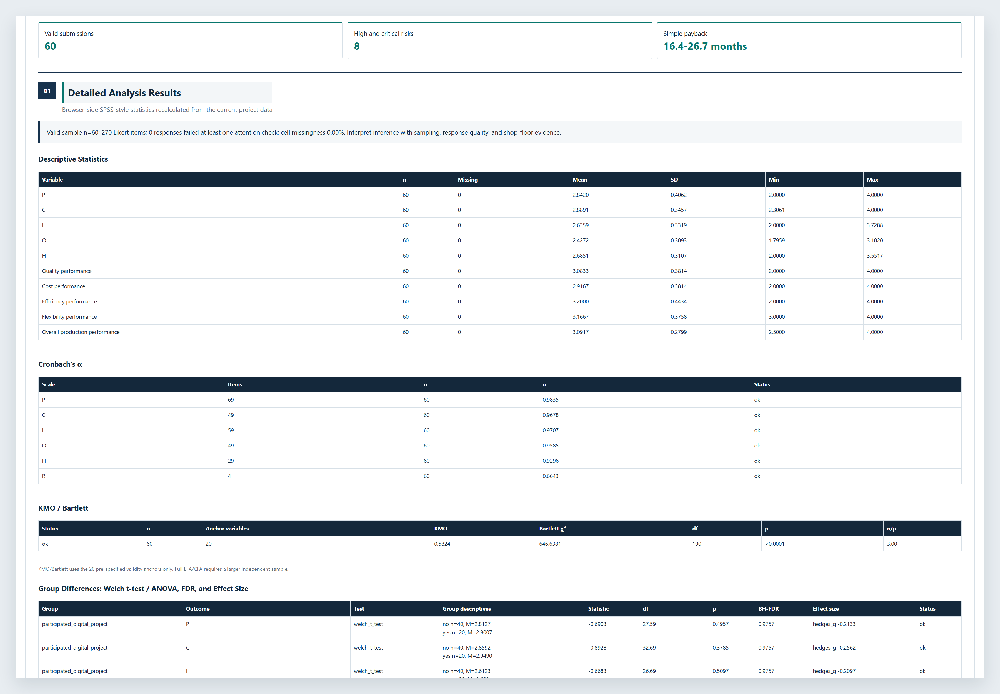
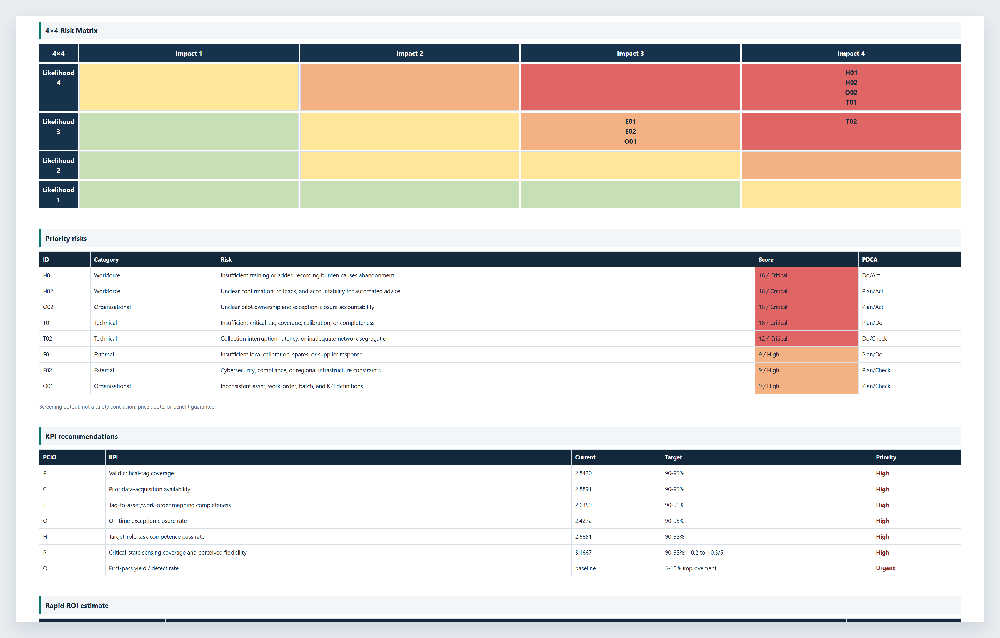

运营场景特征
案例T被表述为“罐区储运运营场景”。诊断关注区域概览、装卸任务、报警与趋势记录、多区域切换、人机协同和人工确认等运营管理问题。页面不描述具体罐容、精确位置、安防布置或真实设备编号。
Real T0 Baseline Case
本页只展示脱敏汇总信息，用于评价 PCIO Toolkit 在罐区储运运营场景中的基线诊断适配性。
案例T为罐区储运运营场景的第一轮 T0 基线调查，不是制造企业案例，也不包含部署后复测、客观绩效跟踪或真实收益数据。页面避免展示罐区安防细节、精确区域信息、车辆信息和真实设备编号。
案例T被表述为“罐区储运运营场景”。诊断关注区域概览、装卸任务、报警与趋势记录、多区域切换、人机协同和人工确认等运营管理问题。页面不描述具体罐容、精确位置、安防布置或真实设备编号。
脱敏汇总显示，案例T在传感和物联网相关题项上具有较好的基础倾向；AI应用、成本相关价值表达和跨区域证据链仍需更清楚的规则和数据口径支持。该摘要用于 PCIO 基线映射，不用于判断运营绩效变化。
| PCIO 层 | 基线诊断关注点 | 解释边界 |
|---|---|---|
| P 感知基础 | 需核验区域、设备、液位/压力/温度等运行数据的可用性和记录完整性。 | 仅支持数据基础检查，不披露具体设备或区域信息。 |
| C 连接集成 | 需加强区域、设备、装卸任务和报警记录之间的映射一致性。 | 需要现场运营人员确认实际流程。 |
| I 诊断洞察 | 需将报警、趋势和任务记录关联到可解释的风险规则。 | 当前为候选规则响应，不是现场风险定级结论。 |
| O 优化闭环 | 需明确人工确认、复盘机制、KPI口径和后续复测安排。 | 当前无 T1/T2 数据，不能表述为运营改善结果。 |

上述风险为脱敏后的候选诊断输出，需由储运或工业运营专家人工确认。

这些 KPI 是后续跟踪建议，不表示当前已有运营改善。